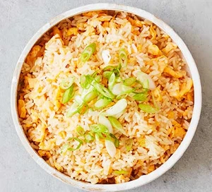

Egg-fried rice

Extremely tasty Egg-fried rice
This recipe is absolutely beginners friendly. Prep and ready in 20 mins
Ingredients
- 250g long grain rice
- 3 tbsp vegetable oil
- 1 onion, finely chopped
- 4 eggs, beaten
- 2 spring onions, sliced, to serve
Steps
- Cook the rice following pack instructions, then drain, spread it out to steam-dry and set aside.
- Heat 2 tbsp of the oil in a large wok over a high heat, then add the onion and fry until lightly browned, around 5 mins. Add the rice, stir and toast for about 3 mins, then move to the side of the pan.
- Add the remaining oil, then tip in the egg mixture. Leave to cook a little, then mix in with the rice – stir vigorously to coat the grains or, if you prefer the egg chunkier, allow to set for a little longer before breaking up and stirring through. Tip into a serving bowl and scatter over the spring onion to serve. You can also add sesame oil, ground white pepper and a splash of soy sauce to season.
Back To Main Menu